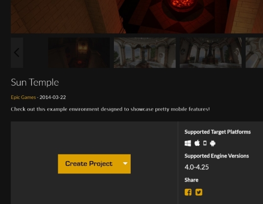

Using Project AirSim Plugin in Custom Environments¶
The Project AirSim UE Plugin can be easily dropped into your own custom Unreal environment to enable simulation without requiring any code changes to your project.
Project AirSim UE Plugin Package contents¶
The Project AirSim UE Plugin package contains the following contents:
ProjectAirSim_UE_Plugin_{Win64|Linux64}
└─ Plugins
└─ ProjectAirSim
| └─ Content
| └─ Resources
| └─ SimLibs
| └─ Source
| ProjectAirSim.uplugin
└─ Drone
| └─ Content
| └─ Resources
| Drone.uplugin
└─ <Any additional content-only plugins>
...
The package contains the Plugins folder that contains the ProjectAirSim UE plugin and additional content-only UE plugins, such as the Drone plugin that contains some basic drone mesh assets.
How to add the Project AirSim Plugin to a custom Unreal environment¶
Adding the Project AirSim Plugin has just 3 basic steps:
Copy the Project AirSim Plugin package’s
Pluginsfolder into your UE environment project’s root directory (the folder containing the main.uprojectfile). If your environment already has other plugins in the project’sPluginsfolder, you can just add theProjectAirSimand additional content-only plugin folders into it.Set the environment’s
GameModetoProjectAirSimGameMode. There are two places that this should be set:A) in the environment’s
Config/DefaultEngine.iniconfig file (setsGlobalDefaultGameModebase mode for all maps in the environment).[/Script/EngineSettings.GameMapsSettings] GlobalDefaultGameMode=/Script/ProjectAirSim.ProjectAirSimGameMode
B) in the Editor’s
World Settingstab for every game map of the environment (overrides theDefaultEngine.inisetting for each specific map). If theWorld Settingstab is not visible, it can be selected from theSettingsbutton in the main Editor toolbar.
To ensure that
ProjectAirSimGameModeis activated properly, it’s recommended to set theGameModetoProjectAirSimGameModein both of these places. For more info about this setting, see Unreal’s Game Mode and Game State.If the environment doesn’t already have a
Sourcefolder in the root of the project, the project will not be able to build the Project AirSim plugin while packaging into a stand-alone game. You can trigger the generation of the necessary C++ boiler-plate code by adding a dummy C++ class by going to the Editor’sFilemenu ->New C++ Class.... You can accept theNoneempty class with all defaults, and then after Unreal generates theMyClassbase files and project C++ boiler-plate code, you can delete the dummyMyClass.cppandMyClass.hppthat were just created.
That’s it! When you start the game, the Project AirSim sim server should be ready for a client script to connect and load a scene.
Example walkthrough using Unreal’s SunTemple free learning environment¶
The following is an example of the steps for adding the Project AirSim Plugin to an existing Unreal Editor project. For illustrative purposes only, this example uses the SunTemple free environment that can be obtained from the Epic Launcher’s Learn tab in the Engine Feature Samples section.

Copy the Project AirSim
Pluginsfolder into the SunTemple project’s root folder.With a text editor, edit the
Config/DefaultEngine.inifile and change the line:GlobalDefaultGameMode=/Script/Engine.GameModeto
GlobalDefaultGameMode=/Script/ProjectAirSim.ProjectAirSimGameModeDouble-click or open from the Unreal Editor the file
SunTemple.uproject. As the project file is loaded, the Project AirSim Plugin should be detected and Unreal Editor will prompt to rebuild. Click Yes. If the rebuild is successful, Unreal Editor should load the environment.Set the environment’s
GameModetoProjectAirSimGameModeas described in step 2 of How to add the Project AirSim Plugin.Since SunTemple doesn’t come with an existing root
Sourcefolder for C++ source files, add a dummy C++ class to generate the boilerplate files as described in step 3 of How to add the Project AirSim Plugin.In the SunTemple environment, spawning at (x=0, y=0) would put the drone on top of a statue. Move the drone’s spawning point a bit to the left so it will land on the floor by opening the scene config file for the client script you want to run (e.g.,
sim_config/scene_basic_drone.jsonc) and modifying the drone origin’s Y-value to -4.0 meters.
"actors": [
{
"type": "robot",
"name": "Drone1",
"origin": {
"xyz": "0.0 -4.0 -10.0",
"rpy-deg": "0 0 0"
},
"ref": "robot_quadrotor_fastphysics.jsonc"
}
],
When you press Play, the drone should spawn and you’re ready to fly!

Forcing the Project AirSim and Drone Plugin content to be cooked when packaging the environment as a stand-alone game binary¶
The Project AirSim Plugin includes a content-only Drone plugin with the drone mesh assets that are used at runtime to spawn the drone. During play in the Editor, this content is accessible, but since the content is not directly referenced in the environment’s code, it may not get cooked during binary packaging of the environement.
To ensure the Drone, Rover and Project AirSim Plugin content is always cooked during environment packaging to a stand-alone game binary, you can add the following modifications to your environment’s Config/DefaultGame.ini file:
To force Project AirSim plugin content (e.g., Drone assets) to get cooked:
[/Script/UnrealEd.ProjectPackagingSettings]
+DirectoriesToAlwaysCook=(Path="/ProjectAirSim")
+DirectoriesToAlwaysCook=(Path="/Drone")
+DirectoriesToAlwaysCook=(Path="/Rover")
or to force all content in the environment to always get cooked:
[/Script/UnrealEd.ProjectPackagingSettings]
bCookAll=True
How to add multiple drones¶
You can also add more drones to the scene. See Multiple Robots in a Simulation for more details.
How to modify the drone¶
See How to Modify a Drone’s Physical Geometry for more details about how a drone’s physical geometry can be modified through the Robot Configuration Settings.
See How to Modify a Drone’s Visual Appearance for more details about how to customize a drone’s visual appearance.
Copyright (C) Microsoft Corporation. All rights reserved.